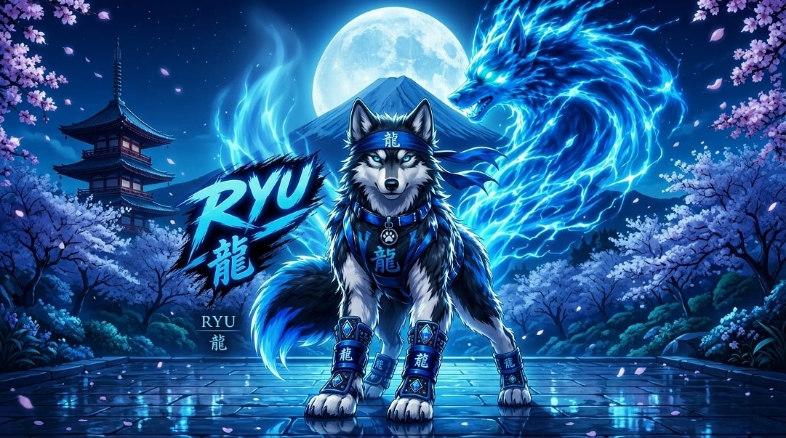
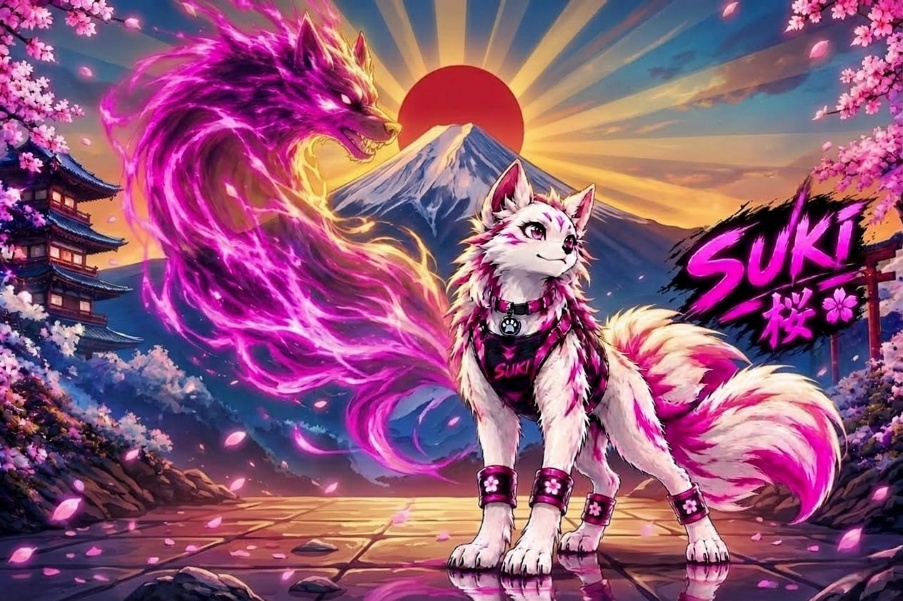
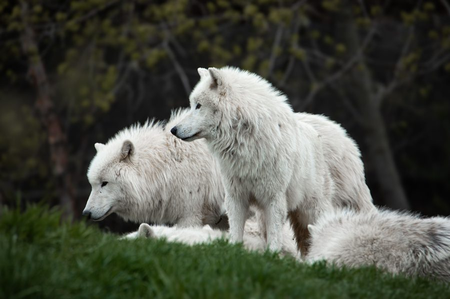
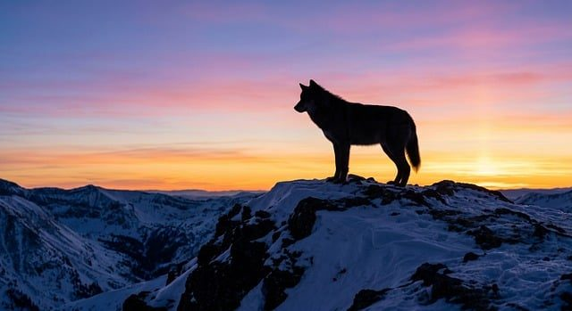

Despierta tu PODER interior
2027 · Bogotá D.C.
Próximamente
Inscripciones muy pronto. Prepárate para correr, entrenar y vivir el anime como nunca antes en las calles de Bogotá.

2027 · Bogotá D.C.
¿Recuerdas cuando corrías por el patio imaginando que eras tu personaje favorito? Esas tardes frente al televisor en las que sentías que, si lo intentabas con todas tus fuerzas, también podías correr, volar a grandes velocidades, proteger a tus amigos y nunca rendirte. De ese recuerdo nace Run Anime.
Es la primera carrera atlética en Bogotá inspirada en el universo del anime: recorridos llenos de energía, música épica, estaciones temáticas y una medalla digna de un verdadero guerrero. No importa si es tu primera carrera o si ya tienes kilómetros en las piernas — aquí cada corredor tiene su propia historia, su propio entrenamiento y su propia transformación.
Y como en todo buen anime, aquí nadie se queda atrás: Run Anime contará con la participación de atletas con discapacidad, porque cada persona tiene su propio poder y merece sentirse el héroe de su historia.
Ven solo, con tu grupo de amigos o con toda la familia. Esta aventura es para todos.
“Esta no es solo una carrera. Es la OVA que esperabas desde niño.”
Dos lobos guerreros que recorren Bogotá para despertar el poder interior de cada corredor. Juntos representan el equilibrio perfecto: la fuerza que nos impulsa y el cariño que nos acompaña.

Ryu es un lobo con alma de dragón: entrena antes del amanecer y cree que el verdadero poder no está en ganar, sino en nunca rendirse. Te acompañará en cada kilómetro para recordarte que siempre puedes dar un paso más.

Suki es una loba valiente y rápida, con el corazón más grande de la manada. Corre por quienes ama y por quienes aún no se atreven a empezar, y te esperará en la meta para celebrar tu victoria.
El lobo es uno de los símbolos más poderosos de la naturaleza, y encarna todo lo que Run Anime quiere despertar en ti.

Los lobos viven y se crían en manada: cooperación, amor y protección de los suyos, corriendo juntos sin dejar a nadie atrás.
Simboliza la capacidad de escuchar tu voz interior y confiar en ti mismo, incluso cuando el camino se pone difícil.

Muestran la fuerza para avanzar con seguridad por tu propio camino, sin perder el sentido de pertenencia a tu manada.
Búscalos el día de la carrera, tómate una foto con ellos y compártela con #RunAnime
Más que un kit: todo lo que necesitas para cruzar tu propia meta.
Diseño exclusivo de esta edición. Primer puesto en todas las categorías.
Edición limitada con diseño de Ryu y Suki. Todas las categorías.
Número de corredor y medición oficial. Aplica a 5K, 10K y 15K.
Cobertura para todas las categorías durante el evento.
Personal médico y ambulancias durante todo el recorrido.
Puntos de hidratación en el recorrido y en la meta.
Recorrido acompañado por personal de logística.
Música, cosplay, stands y actividades.
De participación, con tu tiempo oficial.
Cada edición tendrá una medalla única y coleccionable. Quienes la obtengan serán los fundadores de la leyenda. Se develará oficialmente días antes de la carrera.
Diseño exclusivo en tela técnica liviana y transpirable, pensada para acompañarte desde el calentamiento hasta la meta. Se develará días antes de la carrera.
El primer paso de todo gran guerrero. Ideal para niños, familias y quien quiere vivir la experiencia sin presión. ¡Aquí nacen los héroes!
Para quien empieza en el running o quiere disfrutar con amigos. Suficiente adrenalina, corta para disfrutar cada momento.
Velocidad, resistencia y emoción en cada kilómetro. Para quienes ya entrenan y buscan superar su mejor marca.
El reto mayor de Run Anime. Solo quienes nunca se rinden alcanzan la ascensión. ¿Estás listo para la batalla final?
Presente en 5K y 10K para atletas con discapacidad, con acompañamiento, recorrido accesible, medición de tiempo y todo el kit oficial. Cupos limitados por distancia.
“Porque los límites solo existen para ser superados.”
En Run Anime cada kilómetro es un nuevo capítulo de tu historia. A lo largo del recorrido encontrarás puntos de ambientación con frases y escenas de estilo anime, desde tu primer paso hasta la meta.
Cada meta es una celebración: los guerreros del 2K son recibidos como nuevos héroes, quienes completan el 5K superan su primera OVA, los del 10K avanzan a la Segunda OVA de su vida, y los valientes del 15K cruzan el Arco Dorado del Salón de los Guerreros — donde Ryu y Suki los esperan para celebrar.